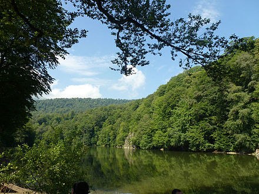
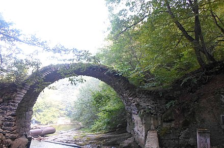

Տավուշի մարզ, մարզ Հայաստանի հյուսիսարևելյան մասում։ Մարզկենտրոնը Իջևան քաղաքն է։
Աշխարհագրություն
Տավուշի մարզը գտնվում է Հայաստանի հյուսիսարևելյան հատվածում։ Ընդգրկում է Իջևանի, Տավուշի (նախկինում՝ Շամշադին), Նոյեմբերյանի, Դիլիջանի տարածաշրջանները և 5 քաղաքներ՝ Իջևան, Նոյեմբերյան, Բերդ, Դիլիջան և Այրում։ Մարզը սահմանակից է Վրաստանին, հյուսիսում և արևելքում՝ Ադրբեջանին։ Հայաստանի պետական սահմանից մարզին բաժին է ընկնում 400 կմ հատված, որից 352-ը՝ Ադրբեջանի հետ։ Մարզի կենտրոնով դեպի հյուսիս-արևելք հոսում է Աղստև գետը։ Ամենացածր կետը գտնվում է Դեբեդավան գյուղի մոտ (380 մ), ամենաբարձր կետը՝ Միափորի լեռնաշղթայի Մուրղուզ լեռն է (2993 մ)։ Հայաստանի Տավուշի մարզը տարածվում է Փոքր Կովկասի լեռնաշղթաների արտաքին շարի վրա (Վիրահայոց, Գուգարաց և Միափորի լեռներ)։ Գտնվում է Հայաստանի չափավոր խոնավ տարածաշրջանում։ Գետերը պատկանում են Կասպից ծովի (Կուր գետի) ավազանին և սնվում են հալոցքային, ստորերկրյա և անձրևային ջրերից։ Գտնվում է Երևանից 137 կմ հեռավորության վրա։
Պատմական ակնարկ
Հայաստանի Ազգային Ժողովի հանրապետության վարչատարածքային բաժանման մասին օրենքով կազմավորվում է Տավուշի մարզը, որը հաստատվում է Հայաստանի նախագահի կողմից 1995 թվականի դեկտեմբերի 5-ին։ Մարզպետարանն իր գործունեությունը սկսել է 1996-ի փետրվարի 20-ին։ Մարզի Տավուշ անունը պայմանական և կամայական է, քանի որ հայոց պատմության մեջ չի եղել նման անունով վարչատարածքային միավոր, որ երբևէ ընդգրկած լիներ ներկայիս մարզի ողջ տարածքը։ Պատմական աշխարհագրությունից հայտնի է, որ Ուրարտու պետության (Արարատյան թագավորություն) ժամանակաշրջանում (մ․թ․ա․ IX-VI դդ․) երկրի հյուսիս-արևելքը, մինչև Կուր գետը զբաղեցրել է Եթիունէ կամ Ուտիք նահանգը,որը նաև ընդգրկել է ներկայիս ողջ Տավուշի մարզը։ Պատմահայր Մովսես Խորենացու հաղորդմամբ և Աշխարհացոյց-ի տվյալների համաձայն, արդեն Արտաշեսյանների թագավորության ժամանակաշրջանում (մ․թ․ա II- մ․թ․ I դդ․) Տիգրան Բ-ի ստեղծած թագավորության մեջ են մտել մարզի կենտրոնական և արևմտյան հատվածները։ Դիլիջանն իր շրջակայքով մտել է Այրարատ աշխարհի Վարաժնունիք գավառի մեջ, իսկ մարզի արևելյան հատվածը՝ Ուտիք նահանգի մեջ՝ կոչվելով Տուսքուստակ գավառ, որը նշանակում է Տուսի գավառ։ Տավուշ անվան ստուգաբանությունը հենց կապվում է այս Տուս անվան հետ, որի մասին հիշատակություններ են պահպանվել պատմիչներ Մովսես Խորենացու, Հովհաննես Դրասխանակերտցու աշխատությունների մեջ։ 1990 թվականի նոյեմբերի 11-ին նախ Տավուշի շրջան կոչվեց 16-րդ դարից Շամշադին անվանվող շրջանը, իսկ Հայաստանի վարչատարածքային վերջին բաժանումից հետո՝ նորաստեղծ մարզը։
Բնակչություն
Մարզը զբաղեցնում է Հայաստանի տարածքի 9.1 %-ը, 1 քառ. կմ-ի վրա ապրում է 50 մարդ։ Բնակչության զգալի մասը բնիկ տավուշցիներ են. կան նաև Արցախից և Գարդմանքից տեղափոխվածների (տարահանվածների) սերունդներ։ Օրինակ, 17-19-րդ դարերում հայության զգալի քանակի ներհոսք է եղել Արցախից դեպի Տավուշ։ Տեղափոխվածները կամ հիմնում էին նոր գյուղեր կամ էլ վերականգնում նախկինում լքված կամ ավերված հայկական բնակավայրերը։ Տավուշի մարզի բնակչությունը կազմում է հանրապետության բնակչության ընդհանուր թվաքանակի 4.2 %-ը։ Բնակչության 62.3 %-ը ապրում է գյուղական վայրերում։ Մարզը հանրապետության վառ արտահայտված գյուղատնտեսական շրջաններից է։ Հայաստանի Տավուշի մարզկենտրոնը Իջևան քաղաքն է (մինչև 1919 թվականը՝ Քարվանսարա), որի բնակչությունը 2003 թվականի հունվարի 1-ի դրությամբ կազմել է 20.3 հազար բնակիչ։
Բնակավայրեր
Տավուշի մարզը ներառում է Մեծ Հայքի 3 աշխարհների գավառներ ու գավառամասեր։ Մարզի տարածքի հյուսիսային մասը (Նոյեմբերյանի տարածաշրջան) հիմնականում համապատասխանում է Գուգարքի Կողբափոր, կենտրոնական և արևմտյան մասերը (Իջևանի տարածաշրջան)՝ Կայեն և Կանգարք գավառներին։ Հարավային մասը (Դիլիջանի տարածաշրջան) մտել է Այրարատ աշխարհի Վարաժնունիք գավառի մեջ, իսկ արևելյան մասերի (Բերդի տարածաշրջան) բնակավայրերն ու հնավայրերը հիշատակվում են Ուտիք աշխարհի Աղվե և Տուչքատակ գավառներում։
Տնտեսություն
Ողջ հյուսիսարևելյան հատվածի վարչական, արդյունաբերական, կրթամշակութային կենտրոնն է և տրանսպորտային հանգույցը։ Քաղաքի արդյունաբերության հիմնական ուղղությունը մշակող արդյունաբերությունն է (մասնավորապես՝ փայտամշակումը, մետաղամշակումը, սննդամթերքի, հանքային ջրի և գինու արտադրությունները)։ Իջևան քաղաքը հայտնի է նաև գորգագործությամբ։
Մարդկային ներուժի զարգացման ինդեքս
Ստորև ներկայացված է Մարդկային ներուժի զարգացման ինդեքսի փոփոխությունը ըստ տարիների[2]։ Այն իրենից ներկայացնում է մարզի կրթական մակարդակի, կյանքի սպասվող տևողության և մեկ անձին ընկնող տարեկանի եկամուտների համախառն ցուցանիշ։
| Տարի | 1990 | 1995 | 2000 | 2005 | 2010 | 2015 | 2017 |
| Ցուցանիշ | 0.611 | 0.583 | 0.626 | 0.677 | 0.719 | 0.73 | 0.734 |
Կլիմա
Տավուշ մարզի ուղղաձիգ գոտիականությունը կանխորոշում է մարզի կլիման։ Այն գտնվում է հանրապետության չափավոր խոնավ տարածաշրջանում։ Արևափայլքի տարեկան տևողությունը 1900-2000 ժամ է։ հանրապետությունում առավելագույն անարև օրերի դիտվում է Իջևանում՝ մինչև 65օր։ Գարունը լինում է տևական և հաճախ ուղեկցվում ցրտահարություններով, ամառը չափավոր տաք է, ձմեռը՝ մեղմ։ Լեռների բարձրության և դիրքադրման հետ կապված՝ մարզի լեռնային հարավն ու հովտային հյուսիսը զգալիորեն տարբերվում են կլիմայական պայմաններով։ Հարավի բարձրադիր լեռներում նվազագույն ջերմաստիճանը կարող է հասնել -38 °C-ի, իսկ առավելագույն ջերմաստիճանը հյուսիսի ցածրադիր հովիտներում՝ 38-40 °C-ի։ վերջին տասնամյակներում անսովոր շոգեր գրանցվել են 1996 և 2000 թվականին, երբ Նոյեմբերյանում, Բերդում և Իջևանում ջերմաչափը ցույց է տվել համապատասխանաբար 42-43 °C աստիճան, ընդ որում անսովոր շոգը ուղեկցվել է երաշտով, որի հետևանքով հսկայական վնասներ կրեցին գյուղացիական տնտեսությունները։ Լինում են նաև հակառակ երևույթը, երբ չափազանց շատ տեղումներ են տեղի ունենում, օրինակ 2002 թվականի ամռանը։ Տարեկան տեղումների քանակը 550-600 մմ է, առավելագույնը՝ ապրիլ-մայիս ամիսներին, որի պատճառով ծառերը հաճախ ծաղկավիժում են։ Ձյունածածկույթի հզորությունը միջին գոտիներում սովորաբար լինում է 10-15սմ, իսկ անսառնամանիք օրերի քանակը՝ 100-240։ Ձմռանը մարզի հարավային սարերում, ձյան առատության և բքի պատճառով դժվարանում է մայրուղիների երթևեկությունը։ Մարզում, ընդհանրապես, և Աղստևի հովտում հաճախակի երևույթ է կարկտահարությունը։
Բնապահպանություն
Բնական լիճը՝ Դիլիջանի մոտ գտնվող Պարզ լիճն է։ 1970-1980 թթ կառուցվել են Խնձորուտի, Հախումի, Տավուշի, Այգեձորի, Ջողազի և Քոլագրի ջրամբարները։ Մարզի բնությունը գեղատեսիլ է։ Ընդհանուր մակերեսի 51%-ը զբաղեցնում են խառն անտառները, որոնք աչքի են ընկնում բուսական և կենդանական աշխարհի բազմազանությամբ, բնական ժառանգության անզուգական հուշարձաններով։ Բնության նախաստեղծ վիճակի պահպանության, առավել հարստացման և տեղական պայմաններում նոր տեսակների ստացման նպատակով Աղստևի ավազանում ստեղծված են Դիլիջանի պետական արգելոցը և Իջևանի անտառային այգին՝ (դենդրոպարկը)։
Տուրիզմ
Մարզի և հատկապես Աղստևի հովտի բնակլիմայական պայմանները (մեղմ կլիմա, թթվածնով հարուստ լեռնային մաքուր օդ, հանքային բուժիչ ջրեր, անտառներ, դեղաբույսերով հարուստ լեռնաշխարհ) չափազանց նպաստավոր են բնակչության հանգստի կազմակերպման, առողջության վերականգման և միջազգային տուրիզմի ծավալման համար։

Պարզ լիճ

Սրանոց կամուրջ
Հայաստանի Տավուշի մարզի տարածքը չափազանց հարուստ է պատմամշակութային կառույցներով՝ վանքային համալիրներ, բերդեր, խաչքարեր, կամուրջներ, դամբարաններ, հուշակոթողներ, հուշաղբյուրներ։ Հատկանշական են Գոշավանքը, Հաղարծնի ու Մակարավանքի համալիրները, Տավուշի բերդը և այլն։ Հայտնի են նաև Ջուխտակ վանքերը, Մաթոսավանքը, Առաքելոց եկեղեցին, Ոսկեպարի Սուրբ Աստվածածին եկեղեցին, Սրանոց կամուրջը, Մորո Ձորո վանքը, Լաստիվերի անապատը, Գոշի լիճը և այլն։